Pražení
Month
Tak jsem tady, v San Franciscu. Abychom to nezdržovali:

První týden jsem pracoval od nevidím do nevidím, teď už trochu začínám pokukovat i po něčem jiném, co bych tady mohl dělat, abych se nezbláznil. Moje mapa vypadá takto:

Chcete-li srovnání s realitou, prosím. Bydlím v Richmondu a pracuju v Heavybit Industries, což je v části nazývané zkráceně SoMa. Obrázek výše znázorňuje, co asi tak o SF momentálně vím a co tuším kde je - neznamená to ale, že jsem tam všude byl. Tohle vidím z okna v Richmondu:
Zatím jsem stihl plus mínus prozkoumat Golden Gate Park (ten jsem si dost oblíbil), pláž a kousek Richmondu. Když zrovna neprší, je tu pořád víceméně slunečno, ale větrno a pod dvacet stupňů. Vánoce tu tedy mohu očekávat mezi palmami, ale na plavky to zrovna moc není. Což moc nevadí - takové slunečné, průměrné počasí se mi vlastně docela líbí. Když budu dobrodružné povahy, vykoupat se v Pacifiku můžu i tak. Nechal jsem se tak trochu paralyzovat tím dlouhým pobytem a dá se říct, že nikam moc nechodím a nic nedělám a vůbec se nechovám turisticky. Našel jsem ale v parku medvídka mývala, takže se nenudím.
Kolegové mi udělali seznam věcí, co mám vidět, ale zatím jsem se do toho moc nepustil…


S kolegou jsme jednoho odpoledne došli z pláže na Lands End. Odtamtud jsme uviděli Golden Gate (průliv do San Francisco Bay) a slavný červený Golden Gate Bridge, který přes něj vede. To byl jeden “velký výlet”, který jsem uskutečnil.


Okolí práce není až tak zajímavé - SoMa a okolí Market St. je plné bezdomovců a tak a vlastně se mi tam ani moc nelíbí. Už se ale učím je “ignorovat” stejně jako místní. Je to tam dost jiné než u nás nebo ve Stockholmu nebo prostě kdekoliv, kde jsem předtím byl.
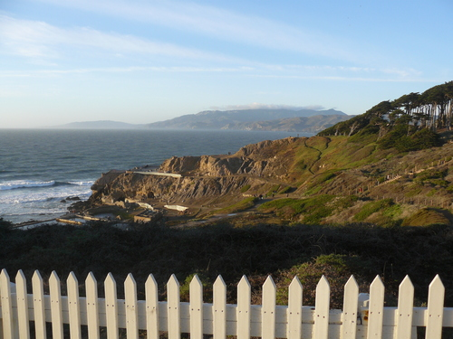
Další “velký výlet”, kterého jsem se účastnil, byl výlet autem na Mt. Diablo kus za Oaklandem. Byly tam srandovní pískovce, po kterých se dalo lozit a byla tam fajn příroda, ale byl to výlet na rodinný piknik, takže žádný hardcore trek.


Po výletě jsme tím autem zajeli ještě na Twin Peaks, odkud je výhled na celé SF:
Je to místo, kam jsem chtěl jednou po vzoru místních vzít Zuzku na rande. Akorát že jsem jí teď zkazil překvapení, protože to tu samozřejmě čte. Tak Zuzko, se s tim smiř, takhle nějak to bude vypadat. Akorát v reálu je to o dost míň rozmazaný a budu ti při tom prstem ukazovat kde co je a budu hrát hrozně chytrýho. Ostatně jako vždycky, když je někde nějaký výhled.
No a víc fotek zatím nemám! Už mám jenom fotku toho, jak jsem pro všechny vařil těstoviny se špenátem.
Je to americký sporák, takže je to VELKÝ sporák. No a abych si udržel nějakou tradici, nakonec přikládám pár kusých postřehů:
Konec hlášení! Zítra je Thanksgiving, tak třeba bude krocan.
To si tak koupíte redukci na zásuvku USA/ČR, dokonce i na víc zemí a s USB (no prostě pecka!) a pak přijedete do států a zjistíte, že do té redukce zastrčíte úplně všechna svá zařízení, kromě kabelu od PC, protože ten má jakési širší ty kolíky a holt se nevleze. Takže abych vysvětlil své odmlčení - po sepsání minulého článku se mi vyšťavil nástroj a až dodnes jsem ho neměl jak nabít. Dneska jsem měl volněji a už jsem taky trochu věděl jak to tu funguje, takže se mi povedlo najít přes internet obchod s elektronikou, udělat si k němu hodinovou vycházku a ukořistit tam redukci za $3.


No a co teď s tím skluzem v zápiscích? Byl jsem ve Vegas prakticky od úterý až do teď do pátku, mám strašně moc vjemů, zážitků, atakdále a vůbec nevím, jak bych vám to měl jako předat, zvlášť pokud chci zachovat tuhletu “komixovou” formu, o kterou se snažím - lehký text, fotky a tak. Zkusím nějak v rychlosti proletět co jsem tady dělal a pak sepsat nějaký seznam postřehů. Jo a komu to nestačí a umí anglicky, občas něco tweetuju, tak to můžete číst na http://twitter.com/honzajavorek.
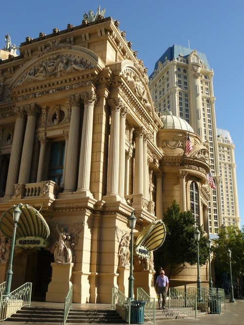


Takže, jdeme na to! Do Vegas jsem jel na re:Invent konferenci. O té asi napíšu celý zvláštní článek a možná i úplně jinam než sem. Tady snad jen to, že byla taky megalomanská, šílená a zpětně si vlastně říkám, že Las Vegas je úplně přesně to pravé místo, kde něco takového pořádat, naprosto mi to zapadá. Konference byla hlavně ve středu a čtvrtek, takže pondělí a pátek jsem měl spíš turistické. Taky je třeba říct, že jsem poprvé v Americe a všechno mě udivuje. Hlavně neumím rozeznat, co je americké a co je Vegas, což je celkem sranda, protože Vegas nejsou zrovna něco, co by byla typická Amerika. Vegas, jak jsem pochopil a viděl, je nejspíš něco, co se nikde jinde na světě neopakuje. Je to absolutní haluz.
Město je hodně velký a je tu teplo. Teplo znamená, že přes den se od devíti ráno smažíte na slunku a když kolem páté zapadne, tak se ochladí, z pouště začne foukat vánek a je dobrý si přes triko přehodit nějakou tenkou mikinu. Možná by stačilo mít triko s dlouhým rukávem :-) Že je to hodně velký jsem pochopil, když jsem chtěl někam dojít pěšky. Je to tu VELKÝ. A placatý a budovy jsou megalomanské a jdou vidět z dálky, takže si myslíte, že je to všechno hrozně blízko. NENÍ. Ale stejně mě to neodradilo a když mi ujížděly autobusy nebo jsem na ně měl někde čekat 20 minut, tak jsem stejně chodil. Mám puchýře na nohou, tolik jsem toho nenachodil za půl roku, procházky vždycky tak na hodinu až dvě svižným tempem minimálně.


Las Vegas je jedna ulice, kolem které jsou kasína. Tomu se říká Strip (něco jako “pruh”, nemá to nic se striptýzem) a je to přesně to, co jde vidět ve filmech. Asi jako když z Prahy jde vidět ve filmech Staromák a Hradčany, nebo z Brna hořící pařez. Je to zoo pro turisty plné maket, reklam, světel, atrakcí, … Slova kasíno, hotel a resort tady splývají. Někdy splývá i kasíno a ulice. Kasína jsou otevřená pro všechny a jsou normálně průchozí, asi jako když jdete do nákupní pasáže - není to nic “nóbl” z hlediska pohybujících se osob, jak se může zdát z filmů. V kasínech je spousta věcí, krom kasína a hotelu většinou i řada obchodů, občerstvení, atd. Co ale “nóbl” je, nebo jak to vlastně popsat, tak to je prostředí - ta kasína a všechno kolem je absolutní nepochopitelná megalomanie, kýč, luxus, atakdále, všechno v jednom. Je to tak špatné, bláznivé, neuvěřitelné a ohromné až je to vlastně obdivuhodné. Ale je dobrý někde vzadu v mozku tak nějak pamatovat na to, že tam ta kasína jsou v této podobě proto, že tam lidi prohrávají spousty peněz :-)


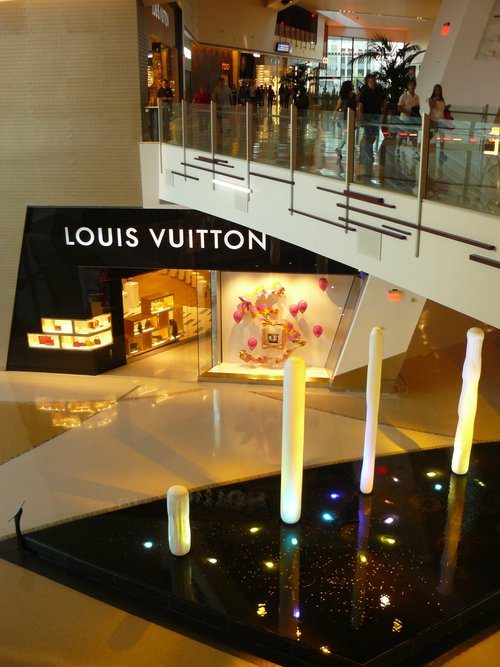

Kromě kasín a celého zábavního průmyslu kolem nich tady toho moc není. Je tu letiště (přímo “kousek” od těch kasín, ne někde mimo - letadla tu má člověk nad hlavou pořád), je tu nějaký “downtown”, tedy centrum města, které je hodně na sever od Stripu a kde je Fremont street, taková malá verze Stripu, tzn. ulice dlouhá asi kilometr, zastřešená, jsou na ní o něco málo menší kasína a má to tam stejně bláznivé provedení se stejně šílenými atrakcemi. Ono totiž Strip není administrativně vůbec součástí Las Vegas, ale takovýma blbostma vás nebudu zatěžovat. Pak je tu ještě univerzita a zbytek města jsou prostě domečky. Okolo toho všeho je poušť a okolo pouště jsou hory. Grand Canyon nebo Death Valley nejsou tak daleko odsud. Poušť se ve městě projevuje hlavně horkem, údajným nedostatkem vody s nímž město bojuje (ale podle fontán by to člověk moc neřekl) a tím, že se tu moc nenosí tráva - většinou jsou na místech, kde by u nás byla tráva, nějaké kamínky a kaktusy. V případě exteriérů hotelů/kasín je to dost často - pozor pozor - tráva umělohmotná :-D Jo a jsou tu všude palmy.


Lidi do Las Vegas jezdí za zábavou. Jezdí se sem brát, jezdí sem na rozlučky, jezdí s rodinou jen tak na víkend, podívat se na různá večerní show, cirkusy, představení… jezdí sem hrát a prohrávat, jezdí sem pít alkohol. Dělají víkendové nájezdy z Kalifornie asi jako mladí Češi v létě dělají nájezdy na kempy a obrací je tam pak naruby. Chcete-li to lépe pochopit, přečtěte si třeba tohle nebo se podívejte na toto ;-)
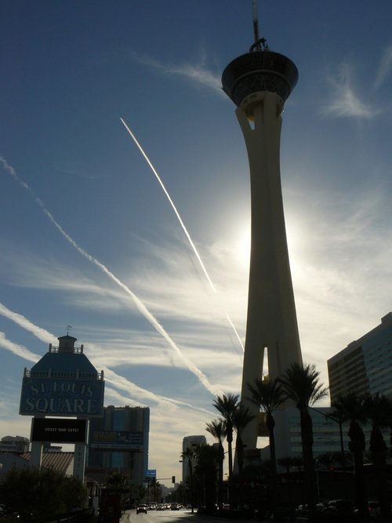


No a co já? Já musím říct, že to není úplně můj způsob zábavy a hlavně tu je všechno hodně drahé i na americké poměry, takže jsem toho moc nevyužil. Hrát na automatech neumím, cvičně jsem prohrál jeden dolar a když jsem zjistil jak hloupě to funguje, tak mě to přestalo bavit. Podíval jsem se na Eiffelovku a když jsem měl “turistický čas”, spíš jsem si to všechno procházel, fotil a přemýšlel nad tím vším. Party jsem si užil dostatečně v rámci konference (nekecám, byly to šílené večerní akce), takže to jediné jsem si asi docela “prožil”. Hodně jsem se procházel i mimo Strip a hodně jsem zápasil s dopravou - Uber tu nějak zakázali nebo co, taxíky jsou astronomicky drahé a autobusy tu mají vymyšlené relativně dobře, ale mají dost mizerné intervaly, trasy i zastávky a než jsem přišel na to, jak je výhodné kupovat si lístky atd., tak už zase jedu pryč. Docela jsem záviděl ostatním, co bydleli v hotelech přímo na Stripu, protože já to měl na svoje Airbnb ubytování daleko, musel jsem s sebou všude vše nosit a ráno a večer jsem se složitě dopravoval.


Hm. Jak tak koukám, docela jsem se rozepsal. Už to není moc komixové vydání. Ale zase je to za čtyři dny pobytu! Tak už asi jen nějak sepíšu ty kusé postřehy:
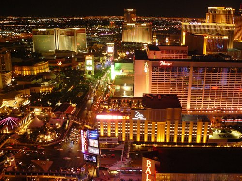

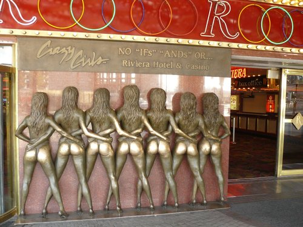

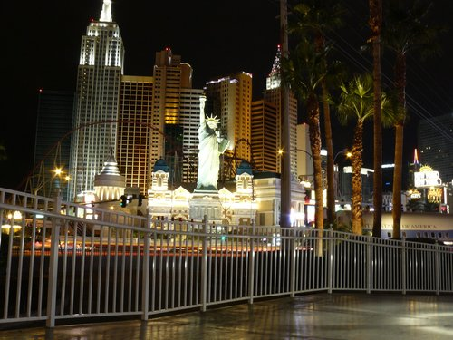


Tak. A to je konečně opravdu pro dnešek vše! Zítra letím do San Francisca.
Sice se naše cesty do vánoc rozdělily, ale já sem asi stejně budu psát, co mě potkalo a budu doufat, že Zuzejk to tady bude prokládat zase tím, co potkalo ji.

V rámci výletu za druhou půlkou firmy v San Franciscu mě v práci poslali na konferenci AWS re:Invent a ta se odehrává v Las Vegas. Takže jsem poprvé letěl takhle daleko, poprvé do Ameriky, poprvé v Las Vegas, které znám jenom z filmů.
Vstával jsem ve čtyři ráno, rozloučil se se svou milovanou a vyrazil na Ruzyň. Tam mě čekala dost dlouhá fronta, na jejímž konci mi vysvětlili, jak budu procházet pohovorem pro vstup do USA a jak budu clít batoh. Pak jsem letěl do Frankfurtu, pak do Atlanty a pak do Vegas.
Let do Frankfurtu byla vlastně nuda. Ve Frankfurtu mě akorát museli prolustrovat, aby zjistili, jestli se chci z USA někdy ještě vrátit a co že tam jedu dělat. Nejsem zastánce tisku nějakých dokumentů, když si stačí opsat pár čísel na papír, takže jsem neměl vytištěnou zpáteční letenku. To se ukázalo jako velká chyba a mým trýznitelům to přidalo na nevídané přísnosti. Zpáteční let nemohli navíc najít v systému, protože zpět letím s KLM a ne s Deltou. Nakonec jsme se ale nějak domluvili a pán mouřenín na přepážce mě ještě vyprovodil s lámanou češtinou a vtípky o tom, že “vraciš na vanoce jo?”
Další “sranda” byla s letem do Atlanty. I přesto, že prý je Delta nejlepší, tak pohodlné to moc nebylo (o dost méně místa než evropské “hodinové” lety), připadal jsem si dost skrčený. Navíc jsem seděl uprostřed mezi dvěma dalšíma lidma. Trvalo to pak už strašně dlouho, byl jsem unavený a spánkově deprimovaný (spát se mi moc nedařilo). Zase jsem ale ke konci zjistil, že vedle mě letí Čech, dokonce se služebním pasem, ale předmět jeho služby raději prozrazovat nebudu, aby mě nehonili tajní agenti. Už od začátku mi přišel tak nějak jako Čech. Asi protože tam popíjel podávané víno (což jsem od něj odkoukal a praktikoval to na zkrácení času), pivo a whisky s velkou náruživostí.
Další zajímavosti: Letělo se skoro kolem Grónska a tak. Cestoval jsem proti času, takže jsem přiletěl ve tři odpoledne, zatímco doma bylo asi devět večer. První osoba, kterou jsem v Atlantě potkal, byla zaměstnankyně letiště, která na nás promluvila česky a později se svěřila, že je původně z Liberce.
Jinak v letadlech a na letištích jsem prakticky nic nefotil, protože mi tam nepřišlo nic zajímavého a byl jsem z toho všeho spíš unavený.
V Atlantě mě už bolela hlava a nic se mi už nechtělo, ale čekal mě ještě další let, čtyřhodinový. Ten se mi podařilo víceméně nějak protrpět a prospat. Zajímavé bylo, že skoro vše, co jsem dostal v minulém letu zadarmo, včetně sluchátek, se zde platilo. Do Vegas jsem dorazil v šest večer, přičemž venku je úplná tma, ale asi 25°C. Jsem zvědavý, jaké to tu bude ve dne. Měl jsem domluvené vyzvednutí od pana domácího (bydlím přes Airbnb) a ten říkal, že zima ještě nezačala, ale léto už je pryč, takže má být nejlepší počasí - teplo, ale ne vedro (Vegas je uprostřed pouště).
Jinak na letišti mě zaujalo, že hned co člověk vystoupí z letadla, tak kolem něj všechno bliká a první co bylo vidět, byly automaty přímo na letišti :-D Hollanův ráj.
Nuže, nechám se překvapit, co bude. Jsem ve Vegas, za barákem mám letiště, kousek od toho je pověstný “strip” s kasíny a zrovna jsem si přečetl, že konference se odehrává v jednom z nich. V tom, co “vypadá jako Benátky”:
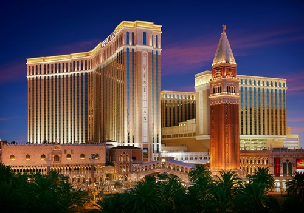
(Tohle jsem nefotil, to jsem vygooglil.)
Takže to ještě bude asi zajímavé :-D Dobrou noc! Nebo tedy vám v ČR a mému biorytmu asi spíš něco jako dobré ráno.

Do naší pražínské schránky přistála pozvánka na svatbu Bakiho a Denisy, takže jsme neváhali a den po Žánkově návratu se Stockholmu jsme vyrazili na cesty. CK Maky nás naštěstí bez kalamit dopravila do Košic a ubytovali jsme se v hotýlku Stadion.
V sobotu dopoledne jsme přijeli k Majerčákům domů, kde jsme vyzvedli nevěstu, ženicha a fotografa Jardu. Měli jsme totiž za úkol asistovat při fotosession v parku - občas jsme při focení něco přidrželi a hlavně jsme se snažili udržovat veselou náladu. Já osobně bych jako modelka hodinové focení asi nevydržela, ale Bakešům to šlo skvěle. :)
Po focení jsme u Majerčáků cinkli první štamprdli, něco málo pojedli a pomalu byl čas vyrazit ke kostelu. Potkali jsme cestou jiný novomanželský pár, ale Baki vyhodnotil, že má hezčí nevěstu. :) Před kostelem se k nám rozvážným tempem až z Tater přišoural Péťa Krásný, který řešil vtipný problém s rozpadlou botou. Lepidlo naštěstí zachránilo situaci! Ve dvě hodiny jsme podle instrukcí vytvořili “špalír” a obřad mohl začít…
Poté, co jsme zamáčkli slzu za novomanžele, nahnali nás na společné focení a do autobusu směřujícího na hostinu. Tu zahajoval Žánek svým proslovem, pěkně od srdíčka to pověděl a snad se to všem líbilo, po něm Tinka (Denisy sestra) ve svém přípitku shrnula, jak se sympaťák Martin postupně vetřel do rodiny. Zase jsme zamáčkli slzu a pak už jsme se veselili u hostiny.
Cimbálovku po čase vystřídal DJ se skvělou vlastností netrefit se do vkusu svatebčanů a mixovat nemixovatelné, ale ani to nás od reje na parketech neodradilo. V jeden okamžik se fakt nenápadně vytratila většina mužů, když přišel na řadu únos nevěsty. Tu asi po půl hodině ženich úspěšně objevil na Plese upírů a přivedl ji pěkně zpět na začepčení a půlnoční redový tanec.
Dobře jsme se bavili i nadále, a tak nám ani moc nevadilo, že kdesi v koutě zůstal zcela zapomenut svatební dort. Co se s ním nakonec stalo, to netušíme, pravědpodobně ho snědli. A nebo to byla jen atrapa…?
Každopádně, byla to krásná akce a jsme moc rádi, že jsme se jí mohli osobně zúčastnit.
Poslední den Zuzejkovy návštěvy jsme konečně po cestě “metrem” do města vystoupili u Globenu, což jsme už nějakou dobu plánovali. Globen je úplně obyčejná hokejová hala, akorát je trochu kulatá.
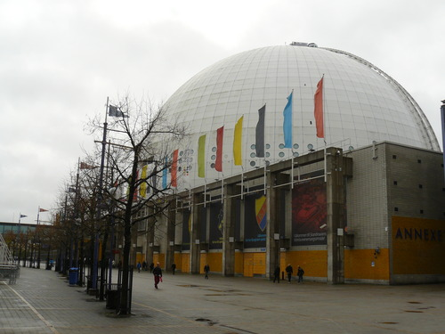
Následně jsme vystoupili na jihu jižního ostrova, abychom si jej prošli. Nedbaje průvodců, našli jsme spoustu hezkých zákoutí a kostelů.

Došli jsme až k průlivu (průplavu?), kde se nám otevřely nové výhledy. Vyvenčili jsme BSE a pak jsme šli k přístavu, kde jsem před lety vystupoval z finského trajektu po cestě z Erasmu do ČR.


Nad přístavem je pěkná vyhlídka, tak jsme na ni vylezli.

Pak jsme putovali po pobřeží a užívali si výhledy, historické uličky, apod. a zamilovávali jsme se do Stockholmu víc a víc.

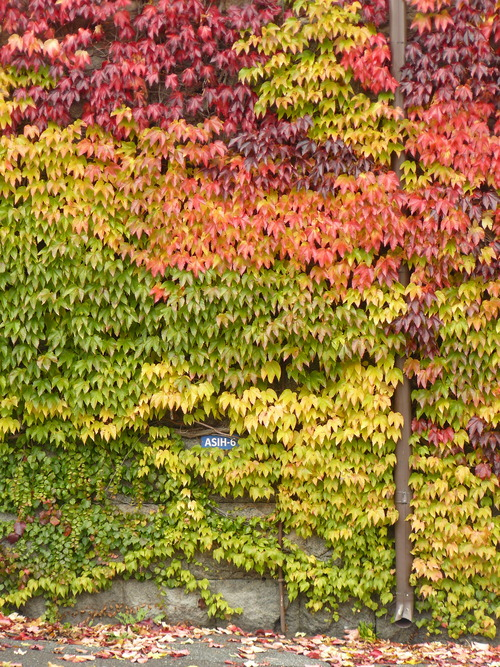


Naše putování vyvrcholilo návštěvou upovídané a přátelské kavárny, koukáním na Thorův zadek a zasněním se u vyhlídky na centrum města, kde jsme byli za deště první den našeho výletu.
Po známých cestách jsme došli k místu, odkud jezdí MHD přívoz na Djurgården a svezli se při rozsvěcujícím se Stockholmu tam a zpátky. V dobrém rozmaru jsme pak procházeli nejcentrálnější centrum města plné historických domečků - tentokrát ale už křížem krážem tak, jak se nám chtělo, ne podle průvodců. Pospojovali a prošli jsme si všechny uličky, navštívili známá místa a kochali se tichou večerní atmosférou města, ve kterém takhle v neděli večer nikdo nebyl.

Nakonec jsme se ještě rozhodli dojít na radnici, ale nějak se nám to prodloužilo, protože jsme se nemohli přestat kochat. Krásně osvětlená Birgit Nilssons allé (alej) nás zavedla až k hlavnímu náměstí moderního Stockholmu, na Sergels Torg.
Po nějakém tom kochání se “jídlem” v Burger Kingu jsme konečně vyrazili směr radnice. I tam jsme našli další nové věci, kterých jsme si předtím nevšimli, takže jsme se zase kochali a kochali…
Poslední pohledy na noční Stockholm, hledání secesního veřejného záchodku, na metro a konec. Zuzejk ráno odlítá do Prahy, já zůstávám ještě tři dny na konferenci.

Na sobotu jsme si připravili návštěvu Vasa muzea s tím, že se pak uvidí, co bude potom. K muzeu Vasa jsme se přepravili loďkou, která je součástí MHD.

Vasa je nádherná obrovská plachetnice, kterou postavili v 17. století pro krále. Postavili ji ale blbě, tak se jim po kilometru jízdy potopila a už se jim nepovedlo ji vytáhnout.


Na začátku 60. let ji našli, vyzvedli, prostudovali, pokusili se ji zakonzervovat a pak ji po několika letech šoupli do muzea. To je teď nejnavštěvovanější švédské muzeum, takže pokud jste byli ve Švédsku, je velká pravděpodobnost, že Vasu jste už viděli.

Až jsme se nabažili Vasy… shodou okolností ve chvíli, kdy zavírali muzeum… tak jsem si řekli, že se projdem po Djurgårdenu, což je takový pěkný královský park za rohem. Sice už bylo šero a samozřejmě podzim, ale i tak to byla fajn procházka.

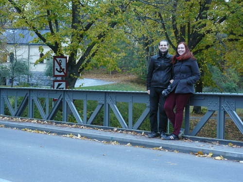
Po setmění jsme došli k pobřeží, kde na nás zase čekal moc pěkně osvětlený Stockholm.


Nakonec jsme toho docela dost nachodili a byli jsme rádi, že jsme chytli poblíž Waldemar-Matuška-huset nějakou vlakotramvaj do města. Jenže se nám pak ještě nechělo domů, tak jsme se jali projet ještě nějaký ten “metro art” - na zastávku tuším s technickou univerzitou a na zastávku, kde je olympijský stadion.

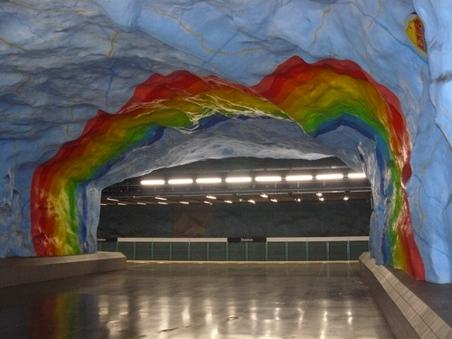
Zuzejkovi došla spisovatelská slina, tak že prý to mám dorazit já. Dopoledne jsme tedy prošli historické centrum a přilehlý rytířský ostrůvek, teď nás čekala radnice. Než se o ní ale rozepíšu, musím vám vysvětlit následující fotku:

Jsme se totiž rozhodli, že když je mezi páry teď v kurzu vozit s sebou na cesty nějakého maskota a fotit ho na různých místech, že to zkusíme taky. Jenže jsme doma našli jenom plyšovou zvětšeninu nemoci šílených krav, tedy BSE. Protože je BSE asi tak fotogenická jako my dva, a dost podobně se jí dařilo aranžovat do atraktivních pozic, byla to nakonec možná dobrá volba. Takže to v tom růzovém vřesu je BSE, ne chlupatý robertek s očima.
Teď už ale šupem na radnici. Byla naprosto famózní. Ani jsme nedýchali, jak to tam bylo boží… (Samozřejmě jsme se nadechli, abychom přežili, ale až po několika sekundách!)
Abych tady dal i nějakou svoji fotku…

Radnice byla nádherná, ale její fotky si určitě najdete na Gůglu, takže vás tady s nima nebudem otravovat. Vyrazili jsme pak do víru velkoměsta a procházeli Normalm, bijící srdce Stockholmu plné obchodů, kanclů, sídel, atd., prostě asi takový Manhattan nebo Václavák nebo tak něco. Našli jsme tam super kavárnu, hezky vyzdobenou, a zdrželi se tam na pár kafíček a čokoládovou kokosovou kouli.
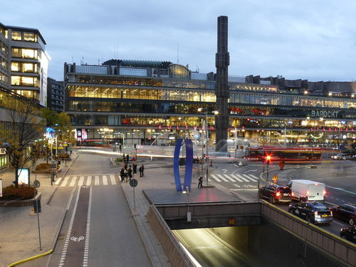
To už se začalo stmívat. Dva zážitky zde na hlavním náměstí - dva netradiční hudebníci a spontánně se připojivší milá švédská dívka, která nás chtěla vyfotit a když jsme jí to rozmlouvali, tak že prý se máme vyfotit s ní, ať máme památku :-)
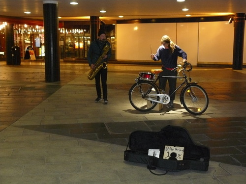
Nakonec jsme za tmy prošli ještě pár ostrůvků směrem k jezeru, z nichž je pěkný výhled na královský palác a staré město.


Zpátky jsme jeli autobusem a metrem. Metro bylo na T-Centralen skvěle vyzdobeno. Taková blbost - nahrubo vysekaná skála natřená barvou - a tak efektní věc. Nu považte sami!

A to je dnes vše. Dem se koukat na nějaký švédský film!
Dneska jsme byli za největší turisty a chodili po největších atrakcích, fotili se a dělali si srandu z toho, co vidíme. Uvidíme, co vymyslíme na zítra. Pár postřehů:
Dobrou noc!
Protože mělo dnes vyjít příznivé počasí, rozhodli jsme se toho co nejvíce nachodit po historickém centru Stockholmu a vydali jsme se metrem rovnou na Gamla Stan. Místní uličky jsou opravdu kouzelné…

a náměstíčka stejně tak.
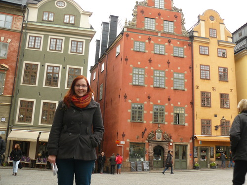
Kochali jsme se na každém kroku. Zde s místní námořnicko-hudební celebritou.

Podařilo se nám sejít z trasy navržené v kapesním průvodci a díky tomu jsme neplánovaně vychytali střídání stráží před královským palácem. Zaujaly nás netradiční návleky na boty a pestrý výběr gardistů.

V Gamla Stanu před Obeliskem jsme objevili taky srandovní mini dodávku… “My shoe is bigger then this car”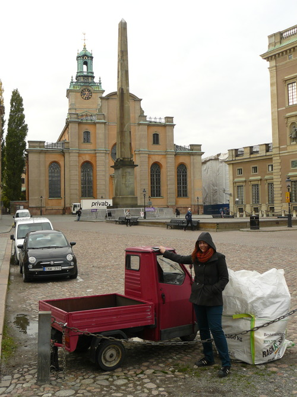
Honza nostalgicky pokukoval po okolí finského kostelíku, kde mimo jiné byla ukryta nejmenší stockholmská socha.

Hledání tohoto náměstíčka nám dalo asi nejvíc práce, ale výsledek nakonec stál za to. Teplý čaj z termosky přišel vhod.

Po polední pauze v Kebab Jeruzalém jsme zabloudili na sousední menší (rytířský) ostrůvek s neméně zajímavými památkami. Jako tento kostel s dostavěnou neogotickou střechou.

Potom jsme ušli sotva pár krooků a dýchla na nás zase moderní doba…
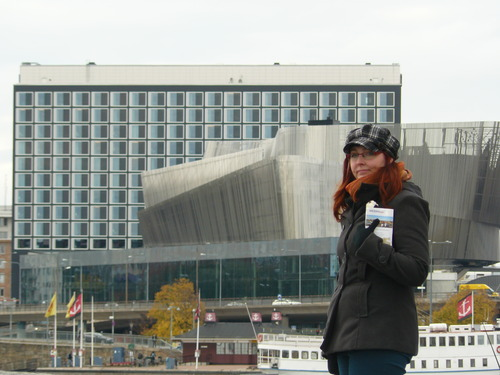

Vstali jsme, odletěli do Stockholmu a zjistili jsme, že jsme doma zapomněli chleba. Ubytovaní jsme přes Airbnb a pan domácí musel být v práci až do pěti, tak jsme potřebovali něčím vyplnit odpoledne.
Zkusili jsme tedy hledat ten chleba. Zjistili jsme, že na hlavní nákupní třídě, u budovy parlamentu, ve starém městě, ani v McDonald’s chleba nemají. V mekáči jsme si ale objednali k našim výletním řízkům dvakrát velké hranolky a oběd byl hotov. Zapomněli sice na okurku, ale nevadilo nám to.
Abyste se taky něco dověděli, tak Stockholm leží na ostrovech mezi velkým jezerem (na mapě na západě, tzn. vlevo) a mořem (vpravo). Mezi nima je stavidlo nebo tak něco, ale vůbec to tam není hezký, protože tam nad tím vybudovali velký dopravní uzel ze severu na jih a naopak, kde jezdí vlaky a metro a spousta aut. A protože už je to dlouho, co to vybudovali, má to nádech trochu jako podchod karvinského nádraží nebo tunel z Žižkova na Karlín. To jen abyste si nemysleli, že ve Švédsku je všechno jenom super a hezký. Našli jsme hned jednu věc, která je tu úplně nejvíc ošklivá!

Ale celý zbytek Stockholmu je moc hezký. Moje osobní postřehy:
Vymysleli jsme, že se projdeme po jižním ostrově (Södermalm) a koukneme na Stockholm z vyhlídek.

Přestože všechny předpovědi hlásily déšť, začalo znenadání pršet. Tato pohroma nás zastihla především kolem Mariatorget, kde byla kašna s Thorem bojujícím s nestvůrami. Jelikož měl vypracovaný zadek, chtěla se Zuzka pozdržet déle, ale déšť byl příliš silný a toto nově vybudované pouto brzy přetrhl.

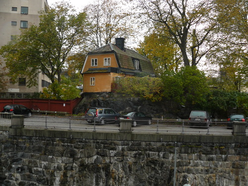

Z očividných důvodů máme taky na polovině fotek nějaké kapky a jsou tak různě rozmazané, ale Thor to vem, aspoň je to autentický.


Po vycházkách jsme se jeli ubytovat a zjistili jsme, že se nám nedaří komunikovat s týpkem, u kterého bydlíme. Nakonec jsem u obchůdku, který měl free wifi (obchůdek asi jako Žabka nebo Brněnka) připojil tablet a zjistil jsem, že jsem si blbě opsal jeho telefonní číslo. Pak už jsme se nějak domluvili a připraveni jsme byli vlastně dobře, protože jsme byt našli úplně sami. Týpek byl celkem OK, docela vtipné povahy, očividně na nás moc připravený nebyl a nestíhal, ale my nejsme moc nároční, tak je nám tu vlastně dobře.
Pak jsem akorát musel hacknout router, abych zjistil heslo na wifi, jelikož to, co jsme dostali vůbec nefungovalo, ale tím dnešní dobrodružství nejspíš končí a zítra hurá objevovat a fotit a hlavně nenosit na zádech mega baťoh a nekličkovat mezi kapkama deště :-P
Dneska má svátek Havel, tak sedíme na jeho letišti a míříme směr Stockholm. Prý tam má být zima a sem tam má pršet, ale stejně věříme, že to tam bude vypadat přesně takhle:
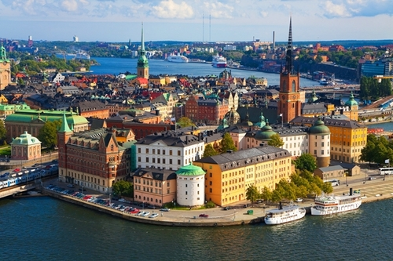
Takže hurá do letadla a pak se zas ozvem!